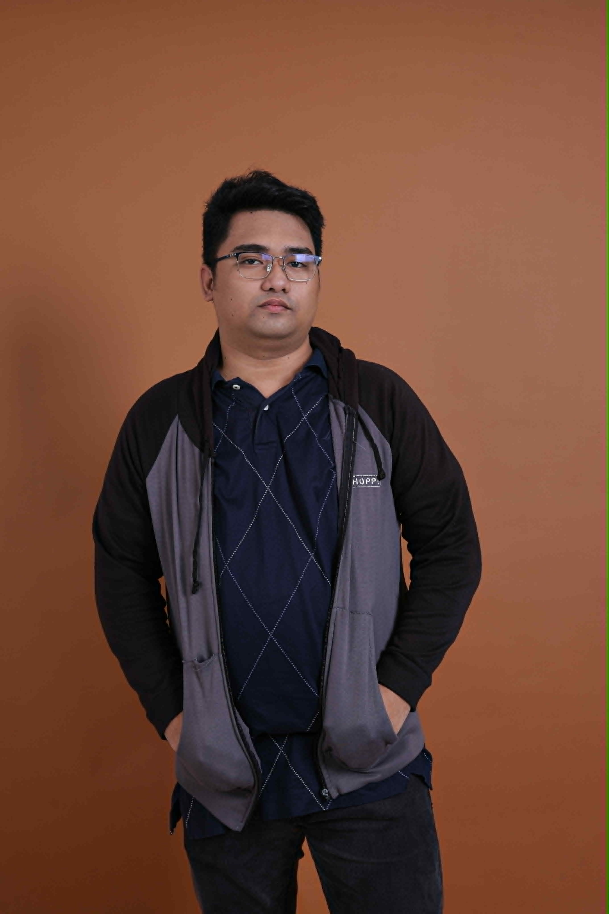

Jimsmar Oliver
Pestaño
Information Technology graduate building real-world systems, specializing in AI computer vision, IoT hardware integration, and full-stack web apps.

Builder, Annotator,
Network Enthusiast
I'm a fresh BS Information Technology graduate from the University of Science and Technology of Southern Philippines (USTP), Cagayan de Oro. I build systems from the ground up, starting from training AI models and wiring up IoT hardware, all the way to deploying full-stack web applications.
My capstone, FishTrace, combined a custom-trained YOLOv11n model on Raspberry Pi with a React Native app and Firebase backend. This system achieved a 97.1% mAP50 across 8 fish species, outperforming YOLOv5, YOLOv7, YOLOv8, and YOLOv11m in benchmark testing.
Beyond coding, I have two years of data annotation experience at Remotasks, where I worked on computer vision pipelines for robotics and LiDAR projects. Through this, I developed a strong understanding of what good training data looks like from the inside.
Ethical Hacker: IoT Security
Cisco Networking Academy
CCNA: Enterprise Networking, Security & Automation
Cisco Networking Academy
BS Information Technology
USTP — Cagayan de Oro
Where I've Worked
- Serve as an L0 Reviewer on the Aloha OTS Mobile Group (flex project) and as an Attempter/L1 Reviewer on the Sky Feather Project (main project), maintaining task accuracy in the 80 - 100% range.
- Annotate clipping boundaries (Attempter level) and author text descriptions for robot scene activities (L0 level), modifying incorrect start/end clips to ensure dataset precision.
- Act as an L1 Reviewer, auditing the combined work of Attempters and L0s to make final accept/reject decisions before tasks undergo Quality Assurance (QA) audits for final client delivery.
- Annotated 2D LiDAR (LTD) data for AI/ML computer vision pipelines, labeling point-cloud frames to train autonomous perception models, maintaining task accuracy in the 80 - 100% range.
- Sustained high dataset consistency across batch submissions over 9 months in a fully remote, async environment.
- Developed Automeka, a full-stack 3D printing services web app using HTML, CSS, and JavaScript with Firebase backend and Google Drive integration for asset management, delivering a working client-facing system within a 3-month internship.
- Designed and launched the user-facing interface enabling clients to browse services and submit print requests online, replacing a manual inquiry process.
Things I've Built
- Engineered an end-to-end AI pipeline. This involved annotating a custom fish dataset via Roboflow, training YOLOv11n on Google Colab, and deploying the model onto a Raspberry Pi camera module to achieve a mAP50 of 0.971 (97.1%) across 8 fish species.
- Built a React Native (Expo) mobile app with a Firebase backend to stream live detection results from the Raspberry Pi, giving market vendors real-time fish identification and quantity counts.
- Outperformed existing YOLO variants in model comparison testing, where the model surpassed YOLOv5 (92.4%), YOLOv7 (90.4%), YOLOv8 (84.9%), and YOLOv11m (75%) on the mAP50 benchmark.
- Built with HTML, CSS, and JavaScript; Firebase as backend with Google Drive integration for asset management.
- Designed the user-facing interface letting clients browse services and submit requests online.
- Designed and developed an interactive 3D web presentation to replace traditional slideshows for a church presentation.
- Integrated real-time interactive 3D models from Sketchfab with custom information labels, specializing in anatomical structures of organs.
- Deployed to Firebase Hosting, utilizing clean paths and fluid transition controls optimized for both desktop and mobile screens.
Technical Stack
Let's Work Together
Actively looking for opportunities in software development, AI/ML, or IT roles. Let's talk.